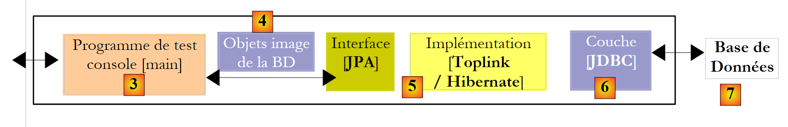
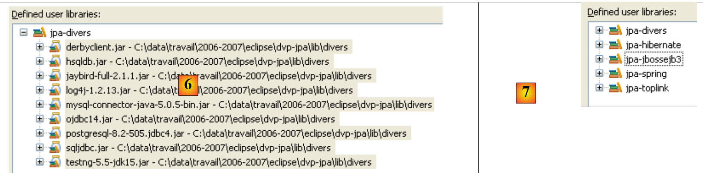

1. Inleiding
1.1. Objectifs
De PDF van het document is beschikbaar |HIER|.
De voorbeelden uit het document zijn beschikbaar |HIER|.
Hier wordt een overzicht gegeven van de belangrijkste concepten van gegevenspersistentie met behulp van de API JPA (Java Persistence API). Na het lezen van dit document en het testen van de voorbeelden zou de lezer de nodige basiskennis moeten hebben opgedaan om vervolgens op eigen kracht verder te kunnen werken.
De API JPA is recent. Deze is pas beschikbaar sinds JDK 1.5. De JPA-laag heeft zijn plaats in een meerlaagse architectuur. Laten we eens kijken naar een dergelijke, vrij gangbare architectuur, namelijk de drielaagse architectuur:
 |
- de laag [1], hier [ui] (User Interface) genoemd, is de laag die met de gebruiker communiceert via een grafische Swing-interface, een console-interface of een webinterface. Haar rol is om gegevens van de gebruiker door te geven aan de laag [2] of om gegevens die door de laag [2] worden aangeleverd, aan de gebruiker te presenteren.
- De laag [2], hier [metier] genoemd, is de laag die de zogenaamde bedrijfsregels, c.a.d, toepast. de specifieke logica van de applicatie, zonder zich af te vragen waar de gegevens vandaan komen die aan de applicatie worden doorgegeven, noch waar de resultaten naartoe gaan die de applicatie produceert.
- de laag [3], hier [dao] genoemd (Data Access Object), is de laag die de laag [2] voorziet van vooraf opgeslagen gegevens (bestanden, databases, ...) en die bepaalde resultaten opslaat die door de laag [2] worden geleverd.
- De laag [JDBC] is de standaardlaag die in Java wordt gebruikt om toegang te krijgen tot databases. Dit wordt gewoonlijk de JDBC-driver van SGBD genoemd.
Er zijn talrijke inspanningen geleverd om het schrijven van deze verschillende lagen voor ontwikkelaars te vergemakkelijken. Een daarvan is JPA, dat bedoeld is om het schrijven van de [dao]-laag te vergemakkelijken; deze laag beheert de zogenaamde persistente gegevens, vandaar de naam API (Java Persistence API). Een oplossing die de afgelopen jaren op dit gebied doorgebroken is, is die van Hibernate:
 |
De [Hibernate]-laag bevindt zich tussen de door de ontwikkelaar geschreven [dao]-laag en de [Jdbc]-laag. Hibernate is een ORM (Object Relational Mapping), een tool die een brug slaat tussen de relationele wereld van databases en die van de objecten die door Java worden beheerd. De ontwikkelaar van de [dao]-laag ziet noch de [Jdbc]-laag, noch de tabellen van de database waarvan hij de inhoud wil benutten. Hij ziet alleen het objectbeeld van de database, een objectbeeld dat wordt geleverd door de [Hibernate]-laag. De koppeling tussen de tabellen van de database en de objecten die door de laag [dao] worden beheerd, wordt voornamelijk op twee manieren tot stand gebracht:
- via configuratiebestanden van het type XML
- via Java-annotaties in de code, een techniek die pas beschikbaar is sinds JDK 1.5
De [Hibernate]-laag is een abstractielaag die zo transparant mogelijk wil zijn. Het streefdoel is dat de ontwikkelaar van de [dao]-laag volledig kan negeren dat hij met een database werkt. Dit is haalbaar als hij niet zelf de configuratie schrijft die de brug vormt tussen de relationele en de objectwereld. De configuratie van deze brug is vrij delicaat en vereist enige ervaring.
De objectlaag [4], die een afspiegeling is van de BD, wordt de „persistentiecontext“ genoemd. Een [dao]-laag die op Hibernate is gebaseerd, voert persistentieacties (CRUD: create – read – update – delete) uit op de objecten van de persistentiecontext; deze acties worden door Hibernate vertaald naar SQL-opdrachten. Voor bewerkingen waarbij de database wordt opgevraagd (de SQL Select), biedt Hibernate de ontwikkelaar een taal (Hibernate Query Language) om de persistentiecontext te doorzoeken, en niet de database zelf.
Hibernate is populair, maar moeilijk onder de knie te krijgen. De leercurve, die vaak als eenvoudig wordt voorgesteld, is in werkelijkheid behoorlijk steil. Zodra men te maken heeft met een database met tabellen die één-op-veel- of veel-op-veel-relaties hebben, is het configureren van de relaties tussen relaties en objecten niet voor elke beginner weggelegd. Configuratiefouten kunnen dan leiden tot slecht presterende applicaties.
In de commerciële wereld bestond er een product dat vergelijkbaar was met Hibernate, genaamd Toplink:
 |
Gezien het succes van de ORM-producten besloot Sun, de maker van Java, een ORM-laag te standaardiseren via een specificatie genaamd JPA, die tegelijk met Java 5 verscheen. De specificatie JPA is geïmplementeerd door zowel Toplink als Hibernate. Toplink, dat aanvankelijk een commercieel product was, is inmiddels een open-sourceproduct geworden. Met JPA ziet de architectuur er als volgt uit:
 |
De laag [dao] communiceert nu met de specificatie JPA, een reeks interfaces. De ontwikkelaar heeft hierdoor gewonnen aan standaardisatie. Vroeger moest hij, als hij zijn laag ORM wijzigde, ook zijn laag [dao] aanpassen, die was geschreven om te communiceren met een specifieke ORM. Nu schrijft hij een laag [dao] die zal communiceren met een laag JPA. Ongeacht welk product deze laag implementeert, blijft de interface van de laag JPA die aan de laag [dao] wordt aangeboden, hetzelfde.
In dit document worden voorbeelden van JPA op verschillende gebieden gepresenteerd:
- allereerst zullen we ons richten op de relationele/objectbrug die de ORM-laag opbouwt. Deze wordt gecreëerd met behulp van Java 5-annotaties voor databases waarin relaties tussen tabellen van het type:
- één-op-één
- één-op-veel
- meerdere-op-meerdere
Om dit gebied te illustreren, zullen we de volgende testarchitecturen opzetten:
 |
Onze testprogramma’s zullen console-applicaties zijn die rechtstreeks de laag JPA benaderen. Daarbij zullen we de belangrijkste methoden van de laag JPA ontdekken. We bevinden ons in een zogenaamde „Java SE”-omgeving (Standard Edition). JPA werkt zowel in een Java SE-omgeving als in een Java EE5-omgeving (Enterprise Edition).
- Zodra we zowel de configuratie van de relationele/objectbrug als het gebruik van de methoden van de JPA-laag onder de knie hebben, keren we terug naar een meer klassieke meerlaagse architectuur:
 |
De [JPA]-laag zal toegankelijk zijn via een tweelaagse architectuur bestaande uit [metier] en [dao]. Het Spring-framework [7] en vervolgens de container EJB3 van JBoss zullen worden gebruikt om deze lagen met elkaar te verbinden.
We hebben hierboven vermeld dat JPA beschikbaar is in de omgevingen SE en EE5. De Java-omgeving EE5 biedt talrijke diensten op het gebied van toegang tot persistente gegevens, met name verbindingspools, transactiebeheerders, ... Het kan voor een ontwikkelaar interessant zijn om van deze diensten gebruik te maken. De Java-omgeving EE5 is nog niet erg wijdverspreid (mei 2007). Deze is momenteel te vinden op de Sun Application Server 9.x (Glassfish). Een applicatieserver is in wezen een webserver. Als men een zelfstandige grafische applicatie van het type Swing bouwt, kan men geen gebruik maken van de EE-omgeving en de diensten die deze biedt. Dat is een probleem. Er verschijnen nu „stand-alone“ EE-omgevingen, c.a.d. die buiten een applicatieserver kunnen worden gebruikt. Dit geldt bijvoorbeeld voor JBos en EJB3, die we in dit document zullen gebruiken.
In een EE5-omgeving worden de lagen geïmplementeerd door objecten die EJB (Enterprise Java Bean) worden genoemd. In eerdere versies van EE stonden de EJB (EJB 2.x) bekend als moeilijk te implementeren, te testen en soms weinig performant. Er wordt onderscheid gemaakt tussen de EJB2.x „entity” en de EJB2.x „session”. Kort gezegd is een EJB2.x "entity" de weergave van een rij in een databasetabel en een EJB2.x "session" een object dat wordt gebruikt om de lagen [metier], [dao] van een meerlaagse architectuur te implementeren. Een van de belangrijkste punten van kritiek op de met EJB geïmplementeerde lagen is dat ze alleen bruikbaar zijn binnen EJB-containers, een dienst die wordt geleverd door de EE-omgeving. Dit maakt unit-tests problematisch. Zo zijn in het bovenstaande schema zouden de unit-tests van de lagen [metier] en [dao], die zijn opgebouwd met EJB, de installatie van een applicatieserver vereisen, een vrij omslachtige handeling die de ontwikkelaar niet echt stimuleert om regelmatig tests uit te voeren.
Het Spring-framework is ontstaan als reactie op de complexiteit van EJB2. Spring biedt in een SE-omgeving een groot aantal diensten die doorgaans door EE-omgevingen worden geleverd. Zo biedt Spring in het onderdeel „Gegevenspersistentie”, dat ons hier interesseert, de verbindingspools en transactiemanagers die applicaties nodig hebben. De opkomst van Spring heeft de cultuur van unit-tests bevorderd, die ineens veel eenvoudiger te implementeren zijn geworden. Spring maakt het mogelijk de lagen van een applicatie te implementeren met behulp van klassieke Java-objecten (POJO, Plain Old/Ordinary Java Object), waardoor deze in een andere context kunnen worden hergebruikt. Ten slotte integreert het op vrij transparante wijze talrijke tools van derden, met name persistentietools zoals Hibernate, Ibatis, ...
Java EE5 is ontworpen om de tekortkomingen van de vorige specificatie EE te verhelpen. De EJB en 2.x zijn nu de EJB3 geworden. Dit zijn POJOs-objecten die zijn voorzien van annotaties waardoor ze speciale objecten worden wanneer ze zich in een EJB3-container bevinden. Binnen deze container kan de EJB3 gebruikmaken van de diensten van de container (verbindingspool, transactiebeheerder, ...). Buiten de container EJB3 wordt het EJB3-object een normaal Java-object. De EJB-annotaties ervan worden genegeerd.
Hierboven hebben we Spring en JBoss EJB3 weergegeven als mogelijke infrastructuur (framework) voor onze meerlaagse architectuur. Deze infrastructuur levert de diensten die we nodig hebben: een verbindingspool en een transactiebeheerder.
- Met Spring worden de lagen geïmplementeerd met POJOs. Deze hebben toegang tot de diensten van Spring (verbindingspool, transactiebeheerder) via afhankelijkheidsinjectie in deze POJOs: tijdens het aanmaken ervan injecteert Spring verwijzingen naar de diensten die ze nodig zullen hebben.
-
JBoss EJB3 is een EJB-container die buiten een applicatieserver kan draaien. Het werkingsprincipe (voor de ontwikkelaar) is vergelijkbaar met dat wat voor Spring is beschreven. We zullen weinig verschillen aantreffen.
-
We sluiten het document af met een voorbeeld van een webapplicatie met drie lagen, eenvoudig maar niettemin representatief:
 |
1.2. Références
[ref1]: Java Persistence with Hibernate, van Christian Bauer en Gavin King, uitgegeven door Manning.
[ref1] is het document dat als basis heeft gediend voor hetgeen hierna volgt. Het is een uitgebreid boek van meer dan 800 pagina’s over het gebruik van Hibernate in twee verschillende contexten: met of zonder JPA. Het gebruik van Hibernate zonder JPA is namelijk nog steeds actueel voor ontwikkelaars die JDK 1.4 of lager gebruiken, aangezien JPA pas met JDK 1.5 is geïntroduceerd.
Nadat ik meer dan driekwart van het boek had gelezen en de rest had doorgenomen, bleek voor mij dat alles in dit document nuttig was. De ervaren Hibernate-gebruiker zou vrijwel alle informatie die in de 800 pagina’s wordt gegeven, moeten kennen. Christian Bauer en Gavin King zijn uitputtend geweest, maar beschrijven zelden situaties die men nooit zal tegenkomen. Alles is het lezen waard. Het boek is op een didactische manier geschreven: er is een oprechte wil om niets in het duister te laten. Het feit dat het is geschreven voor het gebruik van Hibernate zowel met als zonder JPA vormt een uitdaging voor degenen die alleen in een van deze technologieën geïnteresseerd zijn. Zo beschrijven de auteurs aan de hand van talrijke voorbeelden de relationele/objectbrug in beide contexten. De gebruikte concepten lijken sterk op elkaar, aangezien JPA sterk is geïnspireerd door Hibernate. Toch zijn er enkele verschillen. Daardoor kan iets wat voor Hibernate geldt, niet meer gelden voor JPA, wat uiteindelijk tot verwarring bij de lezer leidt.
De auteurs geven voorbeelden van drielaagse applicaties in de context van een EJB3-container. Ze hebben het niet over Spring. Aan de hand van een voorbeeld zullen we zien dat Spring echter eenvoudiger te gebruiken is en een bredere reikwijdte heeft dan de JBoss EJB3-container die in [ref1] wordt gebruikt. Niettemin is „Java Persistence with Hibernate“ een uitstekend boek dat ik aanbeveel vanwege alle basisprincipes die je erover leert.
Het gebruik van een ORM is complex voor een beginner.
- Er zijn concepten die je moet begrijpen om de relaties tussen relaties en objecten te configureren.
- Er is het begrip van de persistentiecontext met de bijbehorende begrippen van objecten in een „persistente”, „losgekoppelde” of „nieuwe” toestand
- er is de mechanica rond persistentie (transacties, verbindingspools), meestal diensten die door een container worden geleverd
- er zijn instellingen die moeten worden aangepast voor de prestaties (tweede-niveau-cache)
- ...
We zullen deze concepten aan de hand van voorbeelden introduceren. We zullen hier weinig theoretische uitweidingen aan wijden. Ons doel is simpelweg om de lezer telkens in staat te stellen het voorbeeld te begrijpen en zich dit eigen te maken, totdat hij in staat is er zelf wijzigingen in aan te brengen of het in een andere context toe te passen.
1.3. Gebruikte hulpmiddelen
In de voorbeelden in dit document wordt gebruikgemaakt van de volgende hulpmiddelen. Sommige daarvan worden in de bijlagen beschreven (downloaden, installeren, configureren, gebruiken). In dat geval worden het paragraafnummer en de pagina vermeld.
- een JDK 1.6 (paragraaf 5.1)
- de IDE voor Java-ontwikkeling in Eclipse 3.2.2 (paragraaf 5.2)
- Eclipse-plug-in WTP (Web Tools Package) (paragraaf 5.2.3)
- Eclipse-plug-in SQL Explorer (paragraaf 5.2.6)
- Eclipse-plug-in Hibernate Tools (paragraaf 5.2.5)
- Eclipse-plug-in TestNG (paragraaf 5.2.4)
- Tomcat 5.5.23 servletcontainer (paragraaf 5.3)
- SGBD Firebird 2.1 (paragraaf 5.4)
- SGBD MySQL5 (paragraaf 5.5)
- SGBD PosgreSQL (paragraaf 5.6)
- SGBD Oracle 10g Express (paragraaf 5.7)
- SGBD SQL Server 2005 Express (paragraaf 5.8)
- SGBD HSQLDB (paragraaf 5.9)
- SGBD Apache Derby (paragraaf 5.10)
- Spring 2.1 (paragraaf 5.11)
- container EJB3 van JBoss (paragraaf 5.12)
1.4. Downloaden van de voorbeeld
Op de website van dit document kunnen de besproken voorbeelden worden gedownload in de vorm van een zip-bestand, dat na uitpakken de volgende map oplevert:
 |
- in [1]: de structuur van de voorbeelden
- in [2]: de map <annexes> bevat elementen die worden besproken in ANNEXES, paragraaf 5. Met name de map <jdbc> bevat de JDBC-drivers van SGBD die worden gebruikt voor de voorbeelden in de tutorial.
- in [3]: de map <lib> bevat 5 mappen met de verschillende .jar-archieven die in de tutorial worden gebruikt
- in [4]: de map <lib/divers> bevat de volgende archieven: - de JDBC-drivers van SGBD - van de tool voor unit-tests [testNG] - van de logtool [log4j]
 |
- in [5]: de archieven van de implementatie JPA/Hibernate en van tools van derden die nodig zijn voor Hibernate
- in [6]: de archieven van de implementatie JPA/Toplink
- in [7]: de archieven van Spring 2.x en van tools van derden die nodig zijn voor Spring
- in [8]: de archieven van de container EJB3 van JBoss
 |
- in [9]: de map <hibernate> bevat de voorbeelden die zijn verwerkt met de persistentielayer JPA/Hibernate
- in [10]: de map <hibernate/direct> bevat de voorbeelden waarin de laag JPA rechtstreeks wordt gebruikt met een programma van het type [Main].
- in [11] en [12]: voorbeelden waarin de laag JPA via de lagen [metier] en [dao] wordt gebruikt in een meerlaagse architectuur, wat de normale gebruikswijze is. De services (verbindingspool, transactiebeheerder) die door de lagen [metier] en [dao] worden gebruikt, worden geleverd door ofwel Spring [11], ofwel door JBoss, EJB3 en [12].
 |
- in [13]: de map <toplink> bevat de voorbeelden uit de map <hibernate> [9], maar ditmaal met een persistentielayer JPA/Toplink in plaats van JPA/Hibernate. ErIn [13] is er geen map <jbossejb3>, omdat het niet gelukt is om een voorbeeld te laten werken waarbij de persistentielayer door Toplink wordt verzorgd en de services door de container EJB3 van JBoss.
- In [14]: een map <web> bevat drie voorbeelden van webapplicaties met een persistentielagen JPA:
- [15]: een voorbeeld met Spring / JPA / Hibernate
- [16]: hetzelfde voorbeeld met Spring / JPA / Toplink
- [17]: hetzelfde voorbeeld met JBoss EJB3 / JPA / Hibernate. Dit voorbeeld werkt niet, waarschijnlijk vanwege een onopgelost configuratieprobleem. Het is niettemin opgenomen zodat de lezer zich erover kan buigen en eventueel een oplossing voor dit probleem kan vinden.
In de handleiding wordt vaak naar deze map structuur verwezen, met name bij het testen van de besproken voorbeelden. De lezer wordt uitgenodigd om deze voorbeelden te downloaden en te installeren. Hierna zullen we de hierboven beschreven map structuur met voorbeelden <voorbeelden> noemen.
1.5. Configuratie van de Eclipse- -projecten uit de voorbeelden
De voorbeelden maken gebruik van "gebruikersbibliotheken". Dit zijn .jar-archieven die onder één naam zijn gebundeld. Wanneer u een dergelijke bibliotheek opneemt in het classpath van een Java-project, worden alle archieven die deze bevat opgenomen in dit classpath. Laten we eens kijken hoe u dit in Eclipse kunt doen:
 |
- in [1]: [Window / Preferences / Java / Buld Path / User Libraries]
- in [2]: we maken een nieuwe bibliotheek aan
- in [3]: we geven deze een naam en bevestigen
 |
- in [4]: we selecteren de JAR-bestanden die deel zullen uitmaken van de bibliotheek [jpa-divers]
- in [5]: we selecteren alle JAR-bestanden uit de map <voorbeelden>/lib/divers
 |
- in [6]: de gebruikersbibliotheek [jpa-divers] is gedefinieerd
- in [7]: we herhalen dezelfde procedure om nog 4 andere bibliotheken aan te maken:
Bibliotheek | Map met de JAR-bestanden van de bibliotheek |
<voorbeelden>/lib/hibernate | |
<voorbeelden>/lib/toplink | |
<voorbeelden>/lib/spring | |
<voorbeelden>/lib/jbossejb3 |